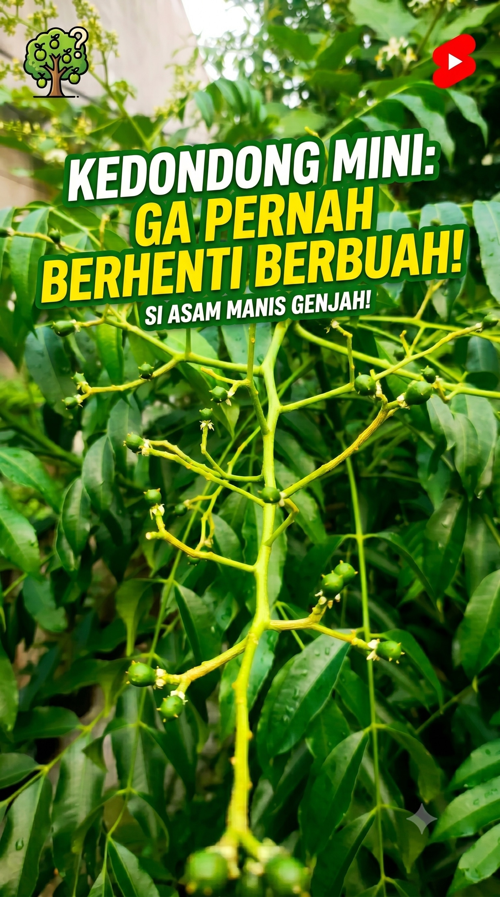

Beberapa waktu lalu, gue sempat cerita soal lalat hijau gendut nan mengkilap yang rajin banget ngebantu penyerbukan bunga di teras rumah gue. Nah, kali ini gue mau bahas tentang sang "tuan rumah" tempat si lalat itu bekerja keras: pohon kedondong mini gue.
Jujur aja, reputasi gue dalam urusan merawat tanaman itu agak... tragis. Kalau tanaman-tanaman gue terdahulu bisa ngomong, mereka mungkin bakal kompak teriak, "Ngapain lo adopsi gue kalau ujung-ujungnya cuma disiram seminggu sekali?!"
Tapi, pohon kedondong mini dalam pot (tabulampot) yang satu ini beda cerita. Dia tangguh. Dia survive dari "tangan dingin" gue yang kadang suka lupa jadwal nyiram. Dan yang paling ajaib, dia gak pernah kenal kata "libur" buat berbuah.
Kalau lo lagi nyari tanaman buah yang gak bikin frustrasi buat ditaruh di halaman rumah, ini alasan kenapa si asam manis genjah ini layak jadi pilihan utama.
1. Defenisi "Genjah" yang Sesungguhnya
Dalam dunia tanam-menanam, ada istilah "genjah", artinya tanaman yang cepat berbuah. Tapi kedondong mini ini menurut gue udah lewat dari sekadar genjah. Dia udah masuk level "workaholic".
Gue perhatiin polanya di teras Villa Ciracas ini. Belum sempat buah yang lama membesar dan siap dipanen, eh di tangkai sebelah atasnya udah muncul gerombolan bunga putih kekuningan yang baru. Begitu terus, siklusnya muter gak ada habisnya.
Beda banget sama pohon mangga atau rambutan yang pakai acara nunggu musim setahun sekali. Kedondong mini gak butuh kalender. Mau musim hujan, mau musim kemarau, yang penting asupan matahari terpenuhi, dia bakal terus pamer bakal buah baru.

"Tanaman lain libur kalau lagi gak musim, kedondong mini ini kayaknya gak punya kalender."
2. Pahlawan Lahan Sempit
Nanam pohon buah di Jakarta — khususnya di daerah padat kayak Ciracas — itu punya tantangan tersendiri: LAHAN. Mau nanam pohon kedondong raksasa yang tingginya menyamai atap rumah? Ya jelas gak mungkin, bisa-bisa diprotes tetangga karena daunnya ngotorin genteng mereka.
Di sinilah indahnya konsep Tabulampot (Tanaman Buah Dalam Pot).
Kedondong mini ini gue taruh di pot ukuran sedang. Tingginya gak sampai sedada gue, tapi produktivitasnya gak kalah sama pohon yang ditanam di tanah luas. Buat kaum urban yang halaman rumahnya cuma tersisa space satu meter atau cuma punya area teras, tanaman ini beneran jadi solusi biar tetap bisa ngerasain sensasi "petik buah sendiri".
3. Perawatan "Anti-Ribet" (Sesuai Standar Gue)
Gue bukan tipe pekebun yang punya jadwal ketat pakai alarm buat ngasih pupuk kimia bermerek mahal tiap minggu. Prinsip berkebun gue simpel: kalau tanaman itu mau hidup bareng gue, dia harus punya daya juang tinggi.
Dan kedondong mini lolos seleksi alam di rumah gue dengan nilai cumlaude. Modal utamanya cuma tiga hal:
1. Matahari Penuh — Taruh di tempat yang paling panas di teras. Tanaman ini suka banget berjemur.
2. Penyiraman Konsisten — Disiram kalau tanahnya udah kelihatan kering (biasanya sore hari sambil santai ngopi).
3. Pupuk Organik Seadanya — Sesekali kalau lagi mood, gue kasih pupuk organik tipis-tipis buat ngejaga nutrisi tanah di dalam pot.
Sisanya? Biarkan alam yang bekerja. Termasuk membiarkan tim penyerbuk alami — seperti kawan lama gue, si lalat hijau — buat ngurusin perkawinan bunganya diam-diam.

"Tiga modal doang: matahari, air, sama pupuk seadanya. Tanaman males urus, ya ini jawabannya."
4. Dari Teras Langsung ke Cobek
Punya pohon buah yang rajin berbuah itu bonusnya instan. Pas siang-siang Jakarta lagi panas-panasnya, terus mata melipir ke teras melihat ada buah kedondong mini yang sudah cukup tua, rasanya tangan ini gatal mau ngambil ulekan.
Tinggal petik beberapa butir, kupas kulit tipisnya, lalu bikin sambal garam-cabai rawit atau sambal kacang yang pedas menggigit. Rasa buahnya yang asam segar dengan sedikit sensasi manis itu beneran kombinasi mematikan buat ngusir kantuk di jam-jam rawan.
Gak perlu repot-repot nunggu tukang rujak lewat depan gang. Sumber kesegarannya ada persis tiga langkah dari kursi teras tempat gue biasa duduk.


📌 Catatan Akhir dari Teras Rumah
Kadang kita sering berpikir kalau berkebun itu harus nunggu punya tanah luas, modal besar, atau keahlian setingkat profesor pertanian. Padahal, dari satu pot kecil kedondong mini di sudut teras rumah, kita udah bisa belajar banyak hal tentang konsistensi alam.
Dia gak butuh banyak tuntutan, dia cuma butuh ruang kecil buat tumbuh, dan sebagai gantinya, dia ngasih buah yang gak pernah berhenti. Sebuah investasi kebahagiaan kecil yang sangat menguntungkan buat jiwa-jiwa yang butuh hiburan gratis di rumah.
Jadi, di halaman rumah lo udah ada yang melihara si asam manis genjah ini belum? Atau jangan-jangan lo masih ragu buat mulai nanam tanaman pertama lo?
Gak usah banyak mikir, coba aja dulu satu pot. Kalau gue yang bertangan maut aja bisa berhasil bikin dia berbuah terus, lo pasti juga bisa!
Tetap autodidak, tetap berkah! 🏴
"Modal satu pot, hasil gak pernah libur. Investasi paling santai yang pernah gue bikin."